Chapter 1 EDA
Carguemos las librerias
library(tidyverse)
library(Amelia)
library(moments)
library(scales)
library(patchwork)
library(GGally)Muestrame las 5 primeras filas
## longitude latitude housing_median_age total_rooms total_bedrooms population
## 1 -122.23 37.88 41 880 129 322
## 2 -122.22 37.86 21 7099 1106 2401
## 3 -122.24 37.85 52 1467 190 496
## 4 -122.25 37.85 52 1274 235 558
## 5 -122.25 37.85 52 1627 280 565
## households median_income median_house_value ocean_proximity
## 1 126 8.3252 452600 NEAR BAY
## 2 1138 8.3014 358500 NEAR BAY
## 3 177 7.2574 352100 NEAR BAY
## 4 219 5.6431 341300 NEAR BAY
## 5 259 3.8462 342200 NEAR BAYLa estructura de los datos
## 'data.frame': 20640 obs. of 10 variables:
## $ longitude : num -122 -122 -122 -122 -122 ...
## $ latitude : num 37.9 37.9 37.9 37.9 37.9 ...
## $ housing_median_age: num 41 21 52 52 52 52 52 52 42 52 ...
## $ total_rooms : num 880 7099 1467 1274 1627 ...
## $ total_bedrooms : num 129 1106 190 235 280 ...
## $ population : num 322 2401 496 558 565 ...
## $ households : num 126 1138 177 219 259 ...
## $ median_income : num 8.33 8.3 7.26 5.64 3.85 ...
## $ median_house_value: num 452600 358500 352100 341300 342200 ...
## $ ocean_proximity : chr "NEAR BAY" "NEAR BAY" "NEAR BAY" "NEAR BAY" ...Veamos si hay datos faltantes
## NA_longitude NA_latitude NA_housing_median_age NA_total_rooms
## 1 0 0 0 0
## NA_total_bedrooms NA_population NA_households NA_median_income
## 1 207 0 0 0
## NA_median_house_value NA_ocean_proximity
## 1 0 0Otra forma de detectar valores faltantes

Ahora, hagamos imputacion de datos faltantes
Verificar si tiene datos faltantes
## NA_longitude NA_latitude NA_housing_median_age NA_total_rooms
## 1 0 0 0 0
## NA_total_bedrooms NA_population NA_households NA_median_income
## 1 0 0 0 0
## NA_median_house_value NA_ocean_proximity
## 1 0 0Vamos a convertir la variable ‘ocean_proximity’ en un factor
##Analisis exploratorio de median_house_value
(Target)
Realicemos el resumen estadístico de la variable
df %>% summarise(n = length(median_house_value),
media = mean(median_house_value),
sd = sd(median_house_value),
mediana = median(median_house_value),
RIC = IQR(median_house_value), #Rango intercuartilico
Q1 = quantile(median_house_value, 0.25),
Q3 = quantile(median_house_value, 0.75),
minimo = min(median_house_value),
maximo = max(median_house_value),
asimetria = skewness(median_house_value),
curtosis = kurtosis(median_house_value))## n media sd mediana RIC Q1 Q3 minimo maximo asimetria
## 1 20640 206855.8 115395.6 179700 145125 119600 264725 14999 500001 0.9776922
## curtosis
## 1 3.3275En el conjunto de datos se registran 20.640 casas, cuyo valor promedio es de 206.855,8 dólares, con una desviación estándar de 179.700. El rango intercuartílico es de 145.125 dólares, el 25% de las casas presenta un valor igual o inferior a 119.600 dólares, mientras que el 75% se encuentra por debajo de 264.725 dólares. Los valores de las casas se encuentran entre 14.999 dólares y 500.001 dólares. El coeficiente de asimetría es 0.97, cercano a 1, lo que indica un sesgo hacia la derecha. La curtosis es de 3.32
df %>%
ggplot(aes(x= median_house_value))+
geom_histogram(aes(y = after_stat(density)),
binwidth = 25000,
fill = "#FFB6C1",
color = "white",
alpha = 0.6) +
geom_density(color = "darkblue", linewidth = 1.2)+
labs(title = 'Distribuación del valor medio de las viviendas',
x = 'Valor medio de la casa (USD)') +
scale_x_continuous(labels = comma) +
scale_y_continuous(labels = comma)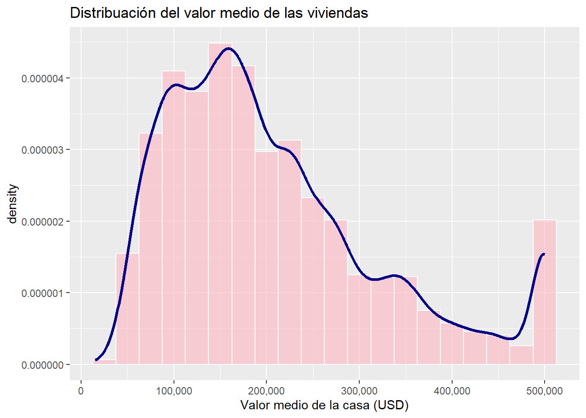
La mayoría de las viviendas tienen valores concentrados entre 100.000 y 200.000 dólares. Se observa un pico principal entre los 150.000/200.000 dólares. Sin embargo, también se observa una cola larga hacia la derecha con una segunda acumulación menor cerca de los 500.000 dólares. Lo cual, genera una distribución asimétrica positiva, donde predominan las casas de precios menores a los 300.000 dólares, pero existen valores extremos que elevan el promedio y aumentan la dispersión.
df %>%
ggplot(aes(x = "", y = median_house_value))+
geom_boxplot(fill = "#FFB6C1", color = "darkred", outlier.color = 'darkblue')+
stat_summary(fun = mean, geom = 'point', shape = 20,
size=3, color = "darkred") +
theme_bw() +
scale_y_continuous(labels = comma)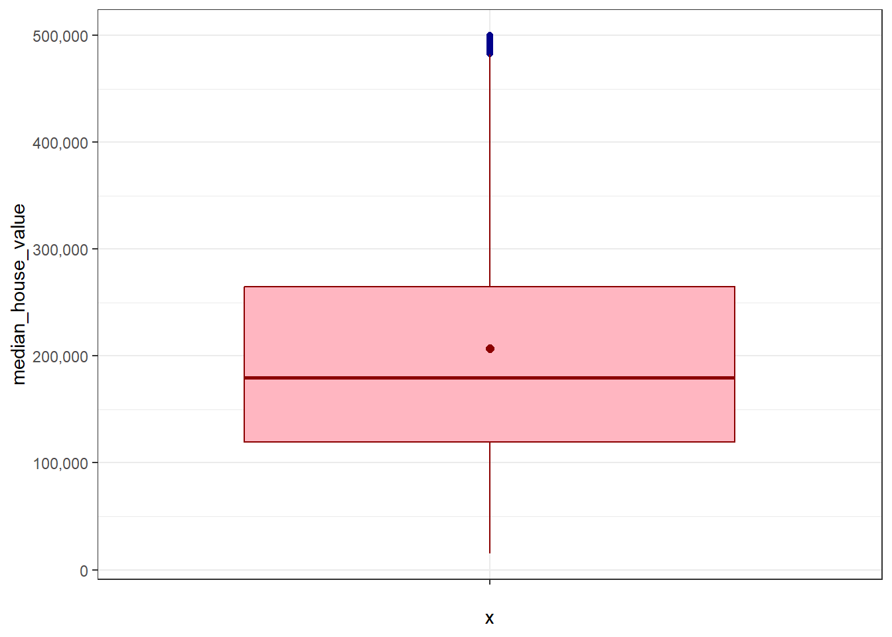
Se observa que la mediana del valor de las viviendas se sitúa cerca de los 180.000 dólares, lo que significa que la mitad de las casas tiene un valor igual o inferior a esa cifra y la otra mitad igual o superior. El rango intercuartílico se extiende aproximadamente entre 125.000 y 275.000 dólares, mostrando que el 50% central de las viviendas se concentra en ese intervalo. El promedio se ubica algo por encima de la mediana, lo que evidencia un sesgo hacia la derecha: existen viviendas con valores más altos que elevan la media. El mínimo registrado es cercano a 15.000 dólares, mientras que el máximo alcanza los 500.000 dólares, lo que refleja una gran dispersión en los precios y la presencia de valores extremos que amplían la variabilidad de la distribución.
df %>%
select(where(is.numeric), -median_house_value) %>%
pivot_longer(
cols = everything(),
names_to = 'variable',
values_to = 'valor'
) %>%
group_by(variable) %>%
summarise(n = length(valor),
media = mean(valor),
sd = sd(valor),
mediana = median(valor),
RIC = IQR(valor), #Rango intercuartilico
Q1 = quantile(valor, 0.25),
Q3 = quantile(valor, 0.75),
minimo = min(valor),
maximo = max(valor),
asimetria = skewness(valor),
curtosis = kurtosis(valor))## # A tibble: 8 × 12
## variable n media sd mediana RIC Q1 Q3 minimo maximo
## <chr> <int> <dbl> <dbl> <dbl> <dbl> <dbl> <dbl> <dbl> <dbl>
## 1 househol… 20640 500. 3.82e2 409 3.25e2 280 605 1 6082
## 2 housing_… 20640 28.6 1.26e1 29 1.9 e1 18 37 1 52
## 3 latitude 20640 35.6 2.14e0 34.3 3.78e0 33.9 37.7 32.5 42.0
## 4 longitude 20640 -120. 2.00e0 -118. 3.79e0 -122. -118. -124. -114.
## 5 median_i… 20640 3.87 1.90e0 3.53 2.18e0 2.56 4.74 0.500 15.0
## 6 populati… 20640 1425. 1.13e3 1166 9.38e2 787 1725 3 35682
## 7 total_be… 20640 538. 4.19e2 438 3.46e2 297 643. 1 6445
## 8 total_ro… 20640 2636. 2.18e3 2127 1.70e3 1448. 3148 2 39320
## # ℹ 2 more variables: asimetria <dbl>, curtosis <dbl>Households: Se registran 20.640 observaciones, con un promedio de 499,5 hogares y una desviación estándar de 382,3. La mediana es de 409 hogares, y el rango intercuartílico de 325 indica una dispersión considerable. El 25% de las comunidades tiene 280 hogares o menos, mientras que el 75% no supera los 605 hogares. Los valores van desde 1 hasta 6.082 hogares. La asimetría de 3,41 refleja un sesgo fuerte hacia la derecha, y la curtosis de 25,05 muestra colas muy pesadas.
Housing median age: La edad mediana de las viviendas es de 29 años, con un promedio de 28,6 y desviación estándar de 12,6. El rango intercuartílico va de 18 a 37 años, indicando que la mitad de las viviendas se ubica en ese intervalo. Los valores oscilan entre 1 y 52 años. La asimetría de 0,06 muestra que la distribución es prácticamente simétrica, y la curtosis de 2,20 sugiere colas algo planas.
Latitud: La latitud promedio es 35,63, con desviación estándar de 2,14 y una mediana de 34,26. El rango intercuartílico va de 33,93 a 37,71, lo que refleja que la mitad de las observaciones se encuentra en ese intervalo. Los valores van de 32,54 a 41,95. La asimetría de 0,46 indica un ligero sesgo hacia la derecha, y la curtosis de 1,88 evidencia colas más planas.
Longitud: La longitud promedio es -119,57, con desviación estándar de 2,00 y una mediana de -118,49. El rango intercuartílico va de -121,80 a -118,01, mostrando que la mitad de las observaciones se concentra en ese intervalo. Los valores van de -124,35 a -114,31. La asimetría de -0,30 refleja un sesgo leve hacia la izquierda, y la curtosis de 1,67 indica colas planas.
Median income: El ingreso mediano es de 3,53 unidades, con un promedio de 3,87 y desviación estándar de 1,90. El rango intercuartílico va de 2,56 a 4,74, señalando que la mitad de las observaciones se ubica en ese intervalo. Los valores van de 0,50 a 15,00. La asimetría de 1,65 evidencia un sesgo hacia la derecha, y la curtosis de 7,95 refleja colas pesadas.
Population: La población promedio es de 1.425 personas, con una mediana de 1.166 y desviación estándar de 1.132. El rango intercuartílico va de 787 a 1.725 personas, mostrando que la mitad de las observaciones se concentra en ese intervalo. Los valores van de 3 hasta 35.682, lo que refleja gran dispersión. La asimetría de 4,94 indica un sesgo fuerte hacia la derecha y la curtosis de 76,53 confirma colas extremadamente pesadas.
Total bedrooms: El número mediano de dormitorios es de 438, con un promedio de 538 y desviación estándar de 419. El rango intercuartílico va de 297 a 643 dormitorios, reflejando que la mitad de las observaciones se ubica en ese intervalo. Los valores van desde 1 hasta 6.445 dormitorios. La asimetría de 3,48 muestra un sesgo fuerte hacia la derecha, y la curtosis de 25,23 evidencia colas pesadas.
Total rooms: El número mediano de habitaciones es de 2.127, con un promedio de 2.636 y desviación estándar de 2.182. El rango intercuartílico va de 1.447 a 3.148 habitaciones, indicando que la mitad de las observaciones se concentra en ese intervalo. Los valores van de 2 hasta 39.320 habitaciones, mostrando una dispersión muy amplia. La asimetría de 4,15 refleja un sesgo muy fuerte hacia la derecha, y la curtosis de 35,62 confirma colas extremadamente pesadas.
df %>%
ggplot(aes(x = "", y = housing_median_age))+
geom_boxplot(fill = "#FFB6C1", color = "darkred", outlier.color = 'darkblue')+
stat_summary(fun = mean, geom = 'point', shape = 20,
size=3, color = "black") +
theme_bw()+
scale_y_continuous(labels = comma) -> p1
df %>%
ggplot(aes(x = "", y = total_rooms))+
geom_boxplot(fill = "#FFB6C1", color = "darkred", outlier.color = 'darkblue')+
stat_summary(fun = mean, geom = 'point', shape = 20,
size=3, color = "black") +
theme_bw()+
scale_y_continuous(labels = comma) -> p2
df %>%
ggplot(aes(x = "", y = total_bedrooms))+
geom_boxplot(fill = "#FFB6C1", color = "darkred", outlier.color = 'darkblue')+
stat_summary(fun = mean, geom = 'point', shape = 20,
size=3, color = "black") +
theme_bw()+
scale_y_continuous(labels = comma) -> p3
p1 + p2 + p3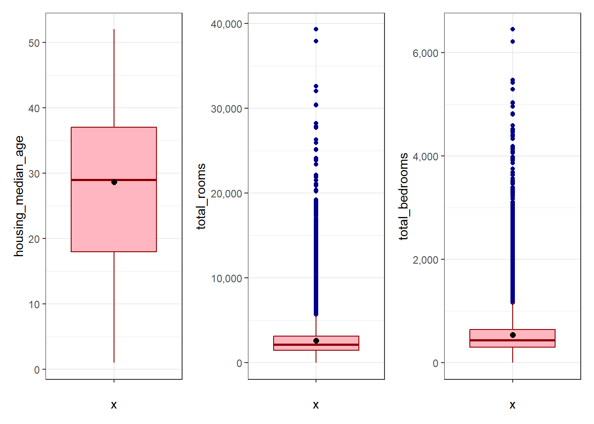
Edad de las casas: Se evidencia que la mediana se sitúa alrededor de los 29–30 años. El 25% de las casas tiene una edad igual o menor a 18 años, mientras que el 75% se encuentra igual o por debajo de los 37 años. El mínimo registrado es de 1 año y el máximo alcanza los 52 años. La media se acerca bastante a la mediana (29 años aproximadamente), lo que refleja una distribución relativamente simétrica, con una dispersión moderada y sin valores extremos que alteren de manera significativa la forma general.
Total de habitaciones: Se observa que la mediana está cerca de las 2.127 habitaciones. El 25% de las casas cuentan con 1.448 habitaciones o menos, mientras que el 75% no supera las 3.148 habitaciones. El mínimo es de 2 habitaciones y el máximo llega a 39.320. La media se ubica por encima de la mediana, lo que evidencia un sesgo hacia la derecha. Además, se identifican numerosos valores atípicos que representan casas con cantidades de habitaciones muy superiores al resto, generando una dispersión elevada y una distribución con colas largas hacia los valores altos.
Total de dormitorios: Se aprecia que la mediana ronda los 400/500 dormitorios. El 25% de las casas tienen 297 dormitorios o menos, mientras que el 75% se encuentra igual o por debajo de 643 dormitorios. El mínimo registrado es de 1 dormitorio y el máximo alcanza los 6.445. La media se sitúa por encima de la mediana, lo que confirma un sesgo hacia la derecha. También se evidencian varios valores atípicos que corresponden a casas con un número de dormitorios muy elevado, reforzando la asimetría positiva de la distribución.
AHora veamos la variable ocean_proximity
df %>%
count(ocean_proximity, name = "n") %>%
mutate(Porcentaje = round((n / sum(n)) * 100, 2),
Variable = 'ocean_proximity',
Categoria = as.character(ocean_proximity))## ocean_proximity n Porcentaje Variable Categoria
## 1 <1H OCEAN 9136 44.26 ocean_proximity <1H OCEAN
## 2 INLAND 6551 31.74 ocean_proximity INLAND
## 3 ISLAND 5 0.02 ocean_proximity ISLAND
## 4 NEAR BAY 2290 11.09 ocean_proximity NEAR BAY
## 5 NEAR OCEAN 2658 12.88 ocean_proximity NEAR OCEANtabla_ocean <- df %>%
count(ocean_proximity, name = "n") %>%
mutate(Porcentaje = round((n / sum(n)) * 100, 2),
Variable = "ocean_proximity",
Categoria = as.character(ocean_proximity)) %>%
select(Variable, Categoria, n, Porcentaje)
tabla_ocean## Variable Categoria n Porcentaje
## 1 ocean_proximity <1H OCEAN 9136 44.26
## 2 ocean_proximity INLAND 6551 31.74
## 3 ocean_proximity ISLAND 5 0.02
## 4 ocean_proximity NEAR BAY 2290 11.09
## 5 ocean_proximity NEAR OCEAN 2658 12.88tabla_ocean_b <- df %>%
count(ocean_proximity, name = "n") %>%
mutate(Porcentaje = round((n / sum(n)) * 100, 1),
Etiqueta = paste0(n, " (", Porcentaje, "%)"))
tabla_ocean <- df %>%
count(ocean_proximity, name = "n") %>%
mutate(Porcentaje = round((n / sum(n)) * 100, 2),
Variable = "ocean_proximity",
Categoria = as.character(ocean_proximity)) %>%
select(Variable, Categoria, n, Porcentaje)
tabla_ocean_b %>%
ggplot(aes(x = ocean_proximity, y=n))+
#Variable categorica sin hacer conteo, geometriabar. Si tienes conteo, porcentaje, geometria de columnas
geom_col(fill = "#FF69B4", width = 0.6) +
geom_text(aes(label = Etiqueta), vjust = -0.5, size = 4.5) +
facet_wrap(~'Distribución de la variable ocean proximity') +
scale_y_continuous(expand = expansion(mult=c(0,0.15))) +
theme_bw()
El 44,3% de las viviendas se encuentran a menos de una hora del océano. En segundo lugar, se observa que un 31,7% de las viviendas están ubicadas en zonas interiores alejadas del mar. Las categorías cerca del océano y cerca la bahía representan porcentajes menores, de 12,9% y 11,1% respectivamente, mientras que solo 5 viviendas se ubican en islas, lo que equivale a un 0%.
##Analisis exploratorio bivariado
df %>%
ggplot(aes(x= median_income, y = median_house_value))+
geom_point(alpha = 0.4, color = "pink")+
labs(y = 'Valor medio de la vivienda', x = 'Ingreso medio')+
facet_grid(. ~ 'Dispersión entre ingreso medio y el valor medio de la vivienda')+
scale_y_continuous(labels = comma) +
theme_bw()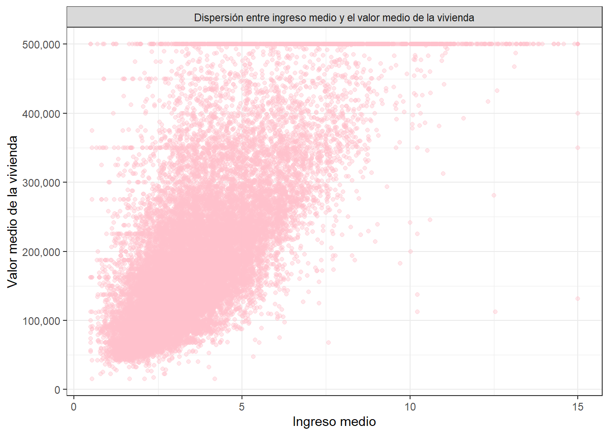
Se evidencia una relación positiva, a medida que aumenta el ingreso medio, también incrementa el valor medio de las viviendas. Sin embargo, la nube de puntos indica una dispersión considerable, lo que muestra que no todas las viviendas siguen esa tendencia y existen variaciones importantes. En los niveles bajos de ingreso se concentran viviendas de menor valor, mientras que conforme el ingreso crece, aparecen viviendas con valores más altos. Se observan además algunos casos extremos de viviendas con precios muy elevados, que sobresalen del patrón general y no tienen una tendencia clara.
df %>%
ggplot(aes(x= latitude, y = median_house_value))+
geom_point(alpha = 0.4, color = "lightblue")+
labs(y = 'Valor medio de la vivienda', x = 'Latitud')+
facet_grid(. ~ 'Dispersión entre ingreso medio y la latitud')+
scale_y_continuous(labels = comma) +
theme_bw()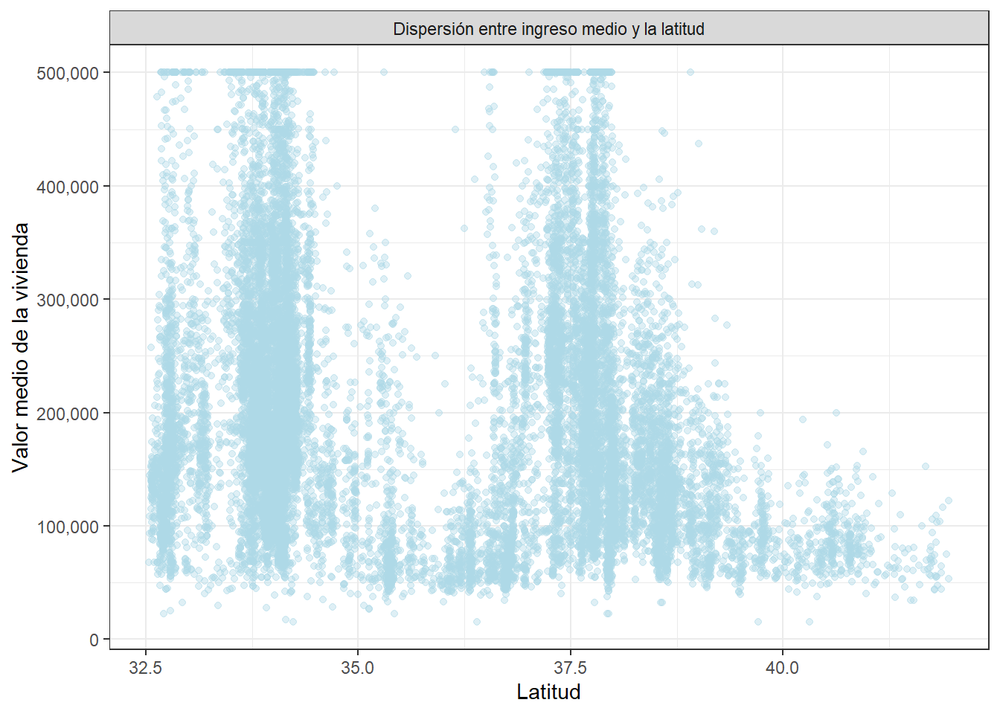
Se observa que la mayoría de las viviendas se concentran en latitudes entre 33 y 37,7, donde los valores medios de las viviendas suelen oscilar entre 125.000 y 300.000 dólares. En esas franjas, la dispersión es amplia, con viviendas que alcanzan hasta 500.000 dólares. En latitudes más altas, cercanas a 40, predominan viviendas de menor valor, alrededor de 50.000 a 150.000 dólares. Mientras que en latitudes más bajas no existe un patrón único y los valores varían significativamente.
df %>%
ggplot(aes(x=longitude, y = median_house_value))+
geom_point(alpha = 0.4, color = "lightgreen")+
labs(y = 'Valor medio de la vivienda', x = 'Longitud')+
facet_grid(. ~ 'Dispersión entre ingreso medio y la longitud')+
scale_y_continuous(labels = comma) +
theme_bw()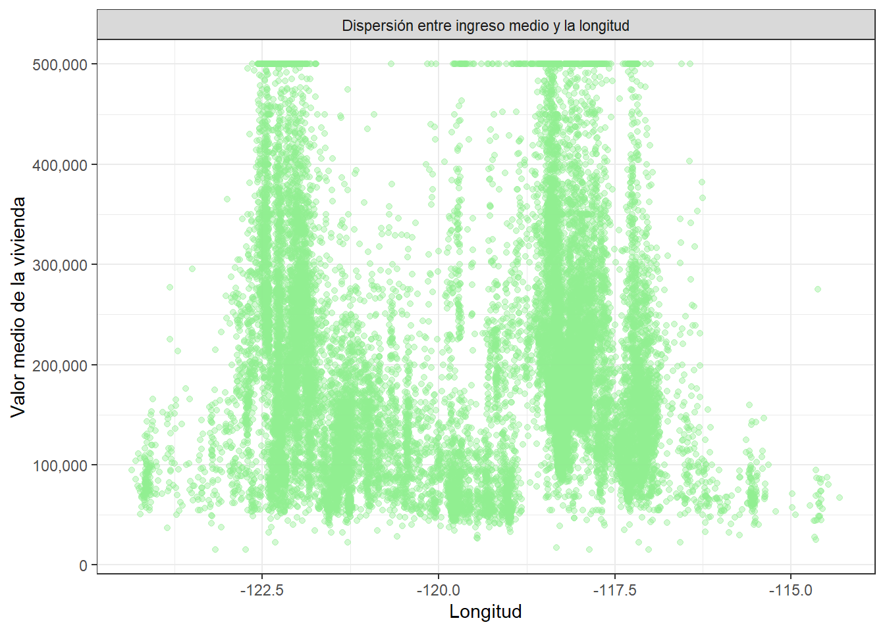
No se evidencia una relación lineal clara entre la longitud y el valor medio de la vivienda, ya que el comportamiento de los datos no es uniforme a lo largo del eje horizontal. La nube de puntos indica una alta dispersión y muestra concentraciones verticales muy marcadas, lo que refleja que el valor de las viviendas depende más de otros factores. En la mayoría de las coordenadas predomina una mayor densidad de viviendas con valores bajos y medios, entre los 100.000 a 300.000 dólares. Mientras que en franjas específicas, alrededor de -122.5 a -116.5, se alcanzan el precios más altos posible, 500.000 dólares. Por el contrario, en la zona central entre los -121.0 y -119.5 se nota una caída drástica en los precios, donde la gran mayoría de las propiedades se mantienen por debajo de los 150.000 dólares y raramente superan los 300.000 dólares. Asimismo, en los extremos por debajo de -123.0 y por encima de -115.0 la cantidad de viviendas disminuye considerablemente y sus precios difícilmente sobrepasan los 200.000 dólares.
df %>%
ggplot(aes(x= housing_median_age, y = median_house_value))+
geom_point(alpha = 0.4, color = "yellow")+
labs(y = 'Valor medio de la vivienda', x = 'Edad media de las viviendas')+
facet_grid(. ~ 'Dispersión entre ingreso medio y edad de las viviendas')+
scale_y_continuous(labels = comma) +
theme_bw()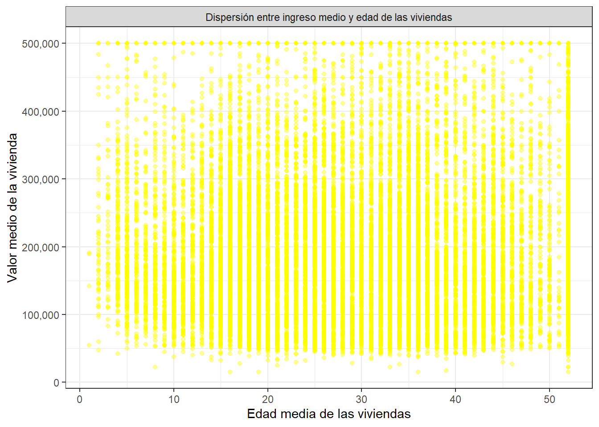
No se evidencia una relación lineal ni una tendencia clara entre la edad media de las viviendas y su valor medio, ya que los puntos se distribuyen de manera uniforme a lo largo de casi todas las edades. La nube de puntos muestra una alta dispersión en forma de franjas verticales continuas en todas las edades de las viviendas, lo que indica que la antigüedad de la propiedad no determina directamente su precio. En prácticamente todas las edades, la mayor densidad de datos se concentra en viviendas con valores situados entre los 100.000 y 250.000 dólares. Además, se percibe un leve incremento en la densidad general de viviendas conforme la edad supera los 15 a 20 años, manteniéndose hasta cerca los 50 años. Finalmente, llama la atención una acumulación vertical densa por encima de los 50 años, donde se agrupa una gran cantidad de viviendas que abarcan todos los rangos de precio, desde los 50.000 hasta los 500.000 dólares.
df %>%
ggplot(aes(x= total_rooms, y = median_house_value))+
geom_point(alpha = 0.4, color = "red")+
labs(y = 'Valor medio de la vivienda', x = 'Total de habitaciones')+
facet_grid(. ~ 'Dispersión entre ingreso medio y número de habitaciones')+
scale_y_continuous(labels = comma) +
theme_bw()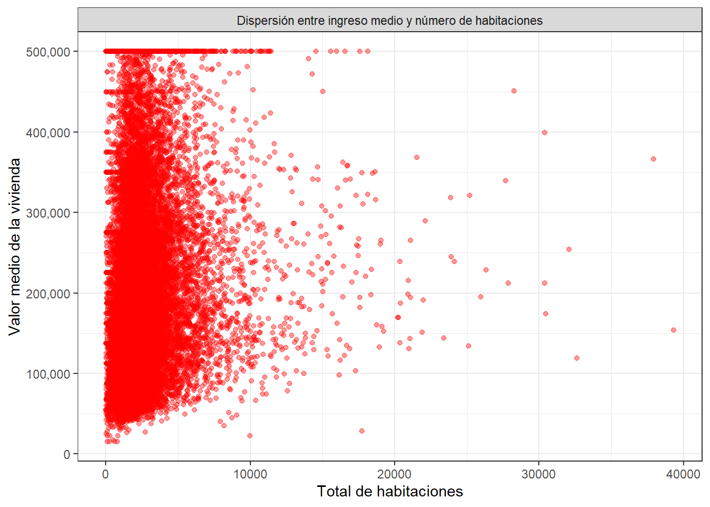
No se evidencia una relación lineal clara entre el total de habitaciones y el valor medio de la vivienda, ya que tener una mayor cantidad de habitaciones no garantiza un precio más alto. La nube de puntos muestra una concentración de datos en los menores números de habitaciones que parte desde las 0 hasta las 5.000 habitaciones, donde se encuentran viviendas con precios que abarcan todo el abanico posible, desde los 30.000 hasta los 500.000 dólares. A medida que el número de habitaciones aumenta hacia las 10000 unidades y más, la presencia de datos se vuelve dispersa y escasa, manteniéndose con valores variados sin una tendencia ascendente ni descendente. Al igual que en las gráficas anteriores, se distingue una marcada línea horizontal en el precio de 500.000 dólares, la cual se extiende desde las primeras habitaciones hasta casi las 20.000.
df %>%
ggplot(aes(x= total_bedrooms, y = median_house_value))+
geom_point(alpha = 0.4, color = "blue")+
labs(y = 'Valor medio de la vivienda', x = 'Total de dormitorios')+
facet_grid(. ~ 'Dispersión entre ingreso medio y número de dormitorios')+
scale_y_continuous(labels = comma) +
theme_bw()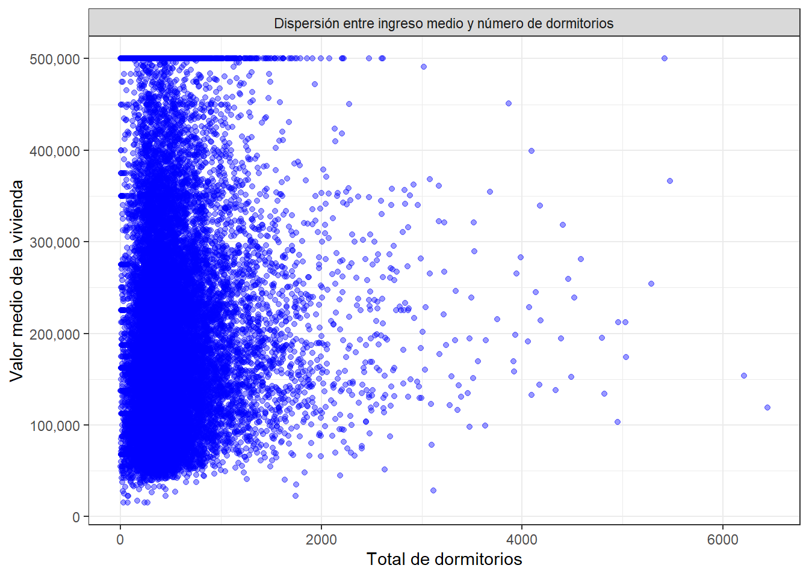
No se evidencia una relación lineal clara entre el total de dormitorios y el valor medio de la vivienda, pues un mayor número de dormitorios no se traduce en un incremento en el precio. La nube de puntos muestra una concentración de datos en los menores números de dormitorios, mayoritariamente comprendidos entre los 0 y 1000 dormitorios, donde se registra la mayor variación de precios, que van desde los 30.000 hasta los 500.000 dólares. Conforme el total de dormitorios supera las 1.500 unidades y se extiende hacia las 6.000, la presencia de observaciones se vuelve aislada y dispersa, sin mostrar un patrón de crecimiento claro en el valor de las viviendas. Se mantiene la línea horizontal continua en los 500.000 dólares, la cual es densa en el menor número de dormitorios y se prolonga de forma más espaciada más allá de los 2.000 dormitorios
df %>%
ggplot(aes(x= population, y = median_house_value))+
geom_point(alpha = 0.4, color = "purple")+
labs(y = 'Valor medio de la vivienda', x = 'Número de habitantes')+
facet_grid(. ~ 'Dispersión entre ingreso medio y número de habitantes')+
scale_y_continuous(labels = comma) +
theme_bw()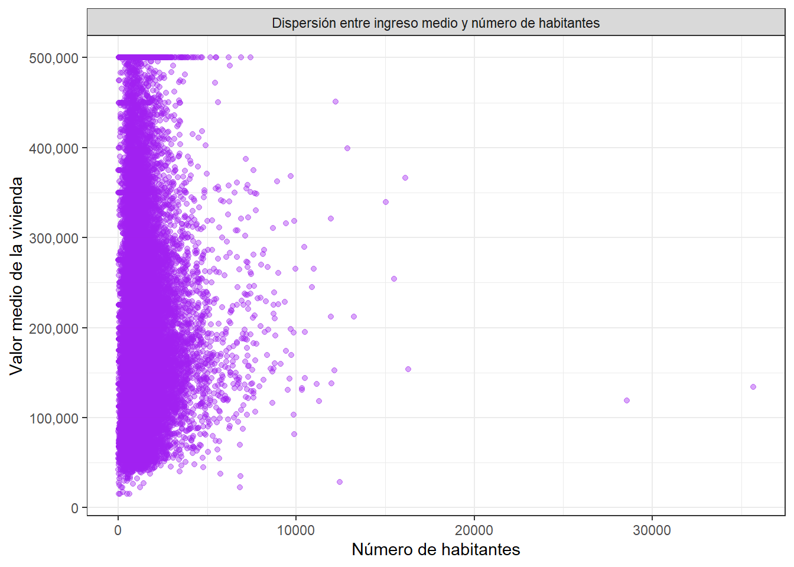
No se evidencia una relación lineal clara entre el número de habitantes y el valor medio de la vivienda, ya que una mayor población no se traduce en un incremento en el precio de las viviendas. La nube de puntos muestra una concentración masiva de datos agrupada en los menores números de habitantes, específicamente entre los 0 y 5.000 habitantes, donde se registran propiedades que cubren todo el rango de precios, desde los 3.0000 hasta los 500.000 dólares. Conforme la cantidad de habitantes supera los 5.000 y se extiende hacia los 15.000, la presencia de puntos se vuelve escasa y dispersa, manteniéndose viviendas con valores variados y sin una tendencia. Por otro lado, se observa una línea horizontal continua en 500.000 dólares, la cual es densa hasta alrededor de los 5.000 habitantes.
df %>%
ggplot(aes(x= households, y = median_house_value))+
geom_point(alpha = 0.4, color = "gray")+
labs(y = 'Valor medio de la vivienda', x = 'Hogares')+
facet_grid(. ~ 'Dispersión entre ingreso medio y hogares')+
scale_y_continuous(labels = comma) +
theme_bw()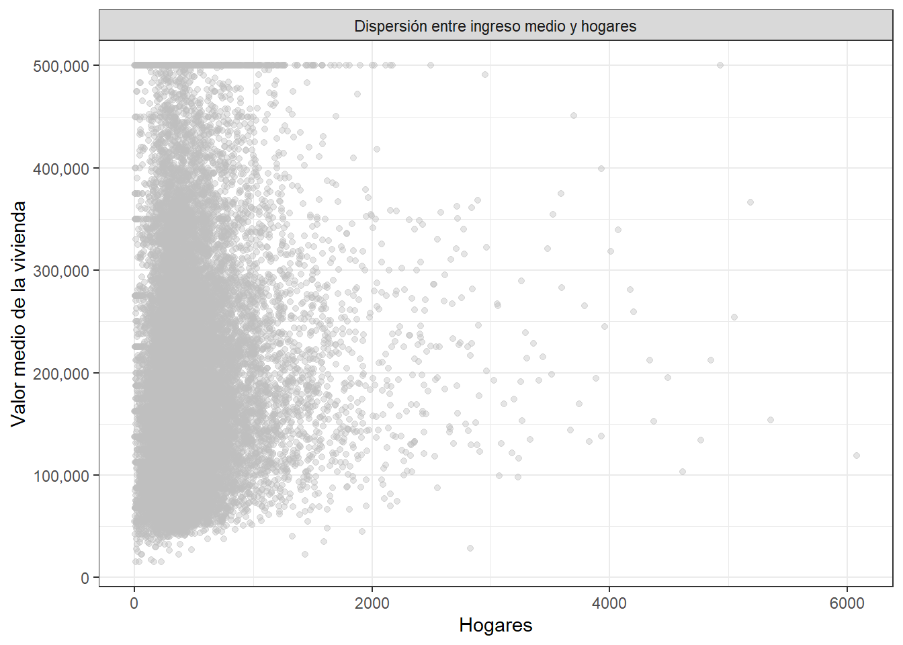
No se evidencia una relación lineal clara entre la cantidad de hogares y el valor medio de la vivienda, ya que un mayor número de hogares no representa un incremento en el precio de las viviendas. La nube de puntos muestra una concentración de datos agrupada en los valores más bajos del eje horizontal, mayormente comprendidos entre los 0 y 1.000 hogares, donde se registran propiedades que abarcan todo el rango de precios, que va desde los 30.000 hasta los 500.000 dólares. A medida que la cantidad de hogares supera los 1.500 y se extiende hacia los 6.000, la presencia de registros se vuelve dispersa y aislada, con viviendas de precios variados sin una clara tendencia. Se aprecia nuevamente la marcada línea horizontal superior en los 500.000 dólares, la cual se muestra bastante densa en el tramo inicial de 0 a 1.000 hogares.
Ahora comparemos el valor medio de las viviendas según la proximidad al oceano
df %>%
group_by(ocean_proximity) %>%
summarise(n = length(median_house_value),
media = mean(median_house_value),
sd = sd(median_house_value),
mediana = median(median_house_value),
RIC = IQR(median_house_value), #Rango intercuartilico
Q1 = quantile(median_house_value, 0.25),
Q3 = quantile(median_house_value, 0.75),
minimo = min(median_house_value),
maximo = max(median_house_value),
asimetria = skewness(median_house_value),
curtosis = kurtosis(median_house_value))## # A tibble: 5 × 12
## ocean_proximity n media sd mediana RIC Q1 Q3 minimo maximo
## <fct> <int> <dbl> <dbl> <dbl> <dbl> <dbl> <dbl> <dbl> <dbl>
## 1 <1H OCEAN 9136 2.40e5 1.06e5 214850 125000 164100 289100 17500 500001
## 2 INLAND 6551 1.25e5 7.00e4 108500 71450 77500 148950 14999 500001
## 3 ISLAND 5 3.80e5 8.06e4 414700 150000 300000 450000 287500 450000
## 4 NEAR BAY 2290 2.59e5 1.23e5 233800 183200 162500 345700 22500 500001
## 5 NEAR OCEAN 2658 2.49e5 1.22e5 229450 172750 150000 322750 22500 500001
## # ℹ 2 more variables: asimetria <dbl>, curtosis <dbl>Se registran 9.136 datos en 1H OCEAN…
Veamos un gráfico de cajas y bigotes
df %>%
ggplot(aes(x = ocean_proximity, y=median_house_value))+
geom_boxplot()+
scale_y_continuous(labels = comma)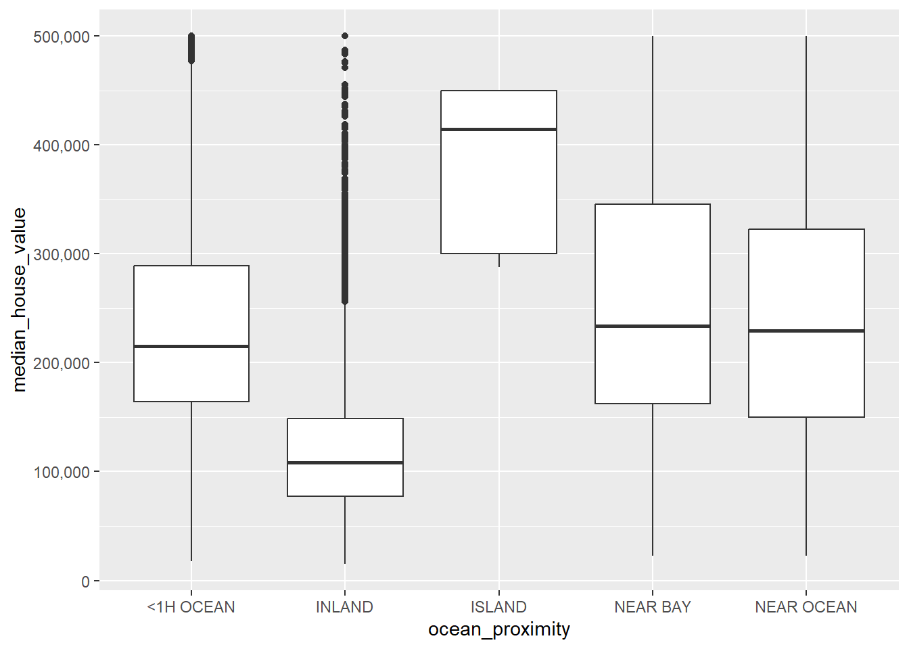
1.1 Paquete GGally
## `stat_bin()` using `bins = 30`. Pick better value `binwidth`.
## `stat_bin()` using `bins = 30`. Pick better value `binwidth`.
## `stat_bin()` using `bins = 30`. Pick better value `binwidth`.
## `stat_bin()` using `bins = 30`. Pick better value `binwidth`.
## `stat_bin()` using `bins = 30`. Pick better value `binwidth`.
## `stat_bin()` using `bins = 30`. Pick better value `binwidth`.
## `stat_bin()` using `bins = 30`. Pick better value `binwidth`.
## `stat_bin()` using `bins = 30`. Pick better value `binwidth`.
## `stat_bin()` using `bins = 30`. Pick better value `binwidth`.